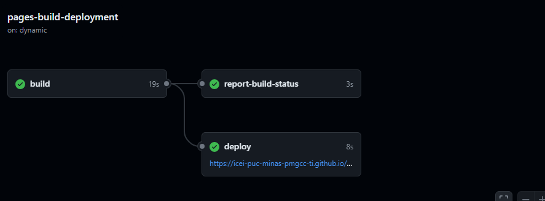

Introdução
Projeto: Vicio em apostas.Integrantes do grupo: Gabriel Fontes Oliveira, Mateus Morcatti Oliveira, Rafael Nascimento Jardim, Rafael Souza Bandeira de Melo, Vinicius Guimarães Ferreira
é um site dedicado a ajudar pessoas viciadas em apostas online, oferecendo informações e recursos para apoiar a recuperação. O site fornece orientações, ferramentas e acesso a redes de apoio para auxiliar aqueles que enfrentam esse desafio, promovendo uma abordagem saudável e consciente em relação ao jogo online.
- Projeto: [VICIO EM APOSTAS]
- Repositório GitHub: Template Trabalho Interdisciplinar
- Membros da equipe:Gabriel Fontes Oliveira, Mateus Morcatti Oliveira, Rafael Nascimento Jardim, Rafael Souza Bandeira de Melo, Vinicius Guimarães Ferreira
- Gabriel FontesGabriel Fontes
- Vinicius FerreiraVinicius Ferreira
- Mateus Morcatti OliveiraMateus Morcatti Oliveira
- Rafael Nascimento JardimRafael Nascimento Jardim
- Rafael Souza Bandeira de MeloRafael Souza Bandeira de Melo
Contexto
Detalhes sobre o espaço de problema, justificativas e os objetivos do projeto.
Problema
O vício em apostas online é um problema sério que afeta a vida de muitas pessoas ao redor do mundo. Ele pode levar a perdas financeiras significativas, impactar negativamente os relacionamentos e causar danos à saúde mental e emocional.
Objetivos
O vício em apostas online é um problema crescente, afetando a saúde mental, financeira e social de muitos indivíduos. O projeto visa oferecer um espaço seguro para informar e apoiar pessoas que lutam contra esse vício, fornecendo recursos para recuperação e prevenção. O objetivo é fornecer orientações práticas e apoio profissional para ajudar os usuários a entender os riscos e buscar ajuda. Com esse projeto, pretende-se minimizar os danos e melhorar a qualidade de vida das pessoas afetadas.
Justificativa
Trabalhar com uma aplicação que ajuda pessoas viciadas em apostas online é crucial porque esse vício pode prejudicar muito a vida das pessoas. A motivação para escolher esse projeto vem da necessidade de apoiar quem está passando por isso, dando informações e ferramentas para que retomem o controle de suas vidas. Os objetivos do projeto foram definidos com base em pesquisas feitas com questionários, entrevistas e dados estatísticos, que nos ajudam a entender o problema melhor e a descobrir as necessidades mais urgentes das pessoas afetadas. Queremos fornecer soluções práticas que ajudem na recuperação e previnam recaídas. Ao criar um espaço onde as pessoas possam acessar info rmações e apoio, o projeto espera ter um impacto positivo na vida de quem enfrenta esse desafio.
Público-alvo
Os usuários da aplicação são, em média, adultos com idades entre 22 e 45 anos, faixa etária na qual é mais comum encontrar pessoas enfrentando o vício em apostas online. O público-alvo é predominantemente composto por homens. A renda do publico alvo é baixa pra média, sabendo que muitos relatam que apostam para mudar de patamar economicamente.
Concepção (Design Thinking)
Detalhes do processo de discovery do projeto.
Apresente o processo de discovery do projeto. Com foco na experiência do usuário, esse processo abrange a compreensão do contexto do problema e das características do usuário, a definição do problema, a geração de ideias, a prototipagem e a elaboração de uma proposta de solução
Processo de Design Thinking
O arquivo que se segue apresenta o resultado desse processo.
Apresente o processo de Design Thinking realizado pelo grupo e documentado por meio do software Miro. No documento apresentado, devem ser incluídos: (1) a matriz CSD, (2) o mapa de stakeholders, (3) as personas, (4) as respectivas propostas de valor e (5) o processo de ideação identificando as ideias levantadas e sua priorização.
Especificações do Projeto
Documentação das especificações do projeto.
Histórias de Usuários
Com base na análise das personas foram identificadas as seguintes histórias de usuários:
Jovens que, por influência de amigos ou buscando uma renda extra, começam a apostar acabam se tornando viciados e tendo varios problemas financeiros.
EU COMO...PERSONA |
QUERO/PRECISO...FUNCIONALIDADE |
PARA...MOTIVO/VALOR |
|---|---|---|
| Usuário do sistema | Registrar meus gastos com apostas nos ultimos 30 diasRegistro | Verificar total gasto com apostas |
| Administrador | Desenvolvimento e Manutenção de Conteúdo EducativoConteudo de conscientização e educacativo | Permitir que sempre tenham noticias e informações atualizadas sobre o assunto |
Requisitos
As tabelas que se seguem apresentam os requisitos funcionais e não funcionais que detalham o escopo do projeto.
Requisitos Funcionais
| ID | Descrição do Requisito | Prioridade |
|---|---|---|
| RF-001 | Permitir que o usuário gerencie seus gastosGerenciamento de gastos | ALTA |
| RF-002 | Coleta de dados para verificar em que nivel está o vicio do usuarioDiagnóstico | MÉDIA |
| RF-003 | Presença de gráficos dos gastos realizados pelo usuário.Gerenciamento de gastos | MÉDIA |
| RF-004 | Cadastro de conteúdos relacionados a apostasCadastro de conteudos | ALTA |
| RF-005 | apresentação de conteúdos relacionados a apostasapresentação de conteudos | ALTA |
| RF-006 | forum de interação entre usuariosforum | ALTA |
| RF-007 | chatbotchatbot | ALTA |
| RF-008 | diario de emoções onde o usuario pode escrever seus sentimentosdiario | ALTA |
Requisitos Não-Funcionais
| ID | Descrição do Requisito | Prioridade |
|---|---|---|
| RNF-001 | O sistema deve ser responsivo para rodar em um dispositivos móvelALTA | MÉDIA |
| RNF-002 | O site deve ser fácil de usar e intuitivo, com uma interface de usuário clara e bem organizada, facilitando a navegação e a busca por informaçõesALTA | ALTA |
Projeto de Interface
Artefatos relacionados com a interface e a interacão do usuário na proposta de solução.
User/Screen Flow e Protótipo interativo
Artefatos relacionados com a interface e a interacão do usuário na solução proposta.
O fluxo de usuário (User Flow) é uma técnica que permite ao desenvolvedor mapear todo fluxo de telas do site ou app. Essa técnica funciona para alinhar os caminhos e as possíveis ações que o usuário pode fazer junto com os membros de sua equipe. 
Um protótipo interativo apresenta o projeto de interfaces e permite ao usuário navegar pelas funcionalidades como se estivesse lidando com o software pronto. Veja o exemplo a seguir.
Wireframes
Metodologia
Detalhes sobre a organização do grupo e o ferramental empregado.
Nesta parte do documento, você deve apresentar a metodologia adotada pelo grupo, descrevendo o processo de trabalho baseado nas metodologias ágeis, a divisão de papéis e tarefas, as ferramentas empregadas e como foi realizada agestão de configuração do projeto via GitHub.
Coloque detalhes sobre o processo de Design Thinking e a implementação do Framework Scrum seguido pelo grupo. O grupo poderá fazer uso de ferramentas on-line para acompanhar o andamento do projeto, a execução das tarefas e o status de desenvolvimento da solução.
Ferramentas
Relação de ferramentas empregadas pelo grupo durante o projeto.
| Ambiente | Plataforma | Link de Acesso |
|---|---|---|
| Processo de Design Thinking | Miro | https://miro.com/app/board/uXjVKdB-XbI=/Design thinking |
| Repositório de código | GitHub | https://github.com/ICEI-PUC-Minas-PMGCC-TI/ti-1-pmg-cc-m-20241-vicio-em-apostas-2GITHUB |
| Protótipo Interativo | MavelApp | https://marvelapp.com/prototype/1ahi9f94/screen/94412987PROTÓTIPO INTERATIVO |
Gestão do Projeto
Gabriel Fontes Oliveira (Product Owner)
Mateus Morcatti Oliveira (Scrum Master)
Rafael Nascimento Jardim (Desnvolvedor/Documentação)
Rafael Souza Bandeira de Melo (Desenvolvedor)
Vinicius Guimarães Ferreira (Desenvolvedor)
Controle de Versão
Estrutura do fluxo de trabalho no ambiente do GitHub.
Discuta como a configuração do projeto foi feita na ferramenta de versionamento (GitHub). Exponha como a gerência de tags, merges, commits e branchs é realizada. Discuta como a gerência de issues foi realizada.

Cada integrante do grupo postou a sua contribuição em uma branch especifica e depois essas partes foram reunidas no site final.
Solução
Esta seção apresenta todos os detalhes da solução criada no projeto.
Apresente cada uma das funcionalidades que a aplicação fornece tanto para os usuários quanto aos administradores da solução.
Inclua, para cada funcionalidade, itens como: (1) titulos e descrição da funcionalidade; (2) Estrutura de dados associada; (3) o detalhe sobre as instruções de acesso e uso.
Video do Projeto
O vídeo a seguir traz uma apresentação do problema que a equipe está tratando e a proposta de solução.
Funcionalidades
Esta seção apresenta as funcionalidades da solução.
Apresente cada uma das funcionalidades que a aplicação fornece tanto para os usuários quanto aos administradores da solução.
Inclua, para cada funcionalidade, itens como: (1) titulos e descrição da funcionalidade; (2) Estrutura de dados associada; (3) o detalhe sobre as instruções de acesso e uso.
Funcionalidade 1 - Cadastro de conteudos
Permite a inclusão, leitura, alteração e exclusão de conteudos para o sistema
- Estrutura de dados: conteudos
- Instruções de acesso:
- Abra o site
- Acesse o menu principal e escolha a opção Cadastro
Funcionalidade 2 - apresentação de conteudos
Permite a observação de conteudos inseridos
- Instruções de acesso:
- Abra o site
- Acesse o menu principal e escolha a opção conteudos gerais
Funcionalidade 3 - gestão de gastos
Permite a observação dos gastos inseridos
- Instruções de acesso:
- Abra o site
- Acesse o menu principal e escolha a gestão de gastos
- insira seu gasto
Funcionalidade 4 - historico de gastos
Permite a observação dos gastos inseridos
- Instruções de acesso:
- Abra o site
- Acesse o menu principal e escolha a opção gestão de gastos
- insira seu gasto
Funcionalidade 5 - forum
Permite a interação
- Instruções de acesso:
- Abra o site
- Acesse o menu principal e forum
- digite sua mensagem
Funcionalidade 6 - chatbot
responde duvidas frequentes
- Instruções de acesso:
- Abra o site
- Acesse o menu principal e forum
- escolha uma menssagem
Funcionalidade 7 - diario
o usuario pode escrever seus sentimentos
- Instruções de acesso:
- Abra o site
- Acesse o menu principal e diario de emoções
- digite uma menssagem
Funcionalidade 8 - Coleta de dados para verificar em que nivel está o vicio do usuario
o nivel do gasto do usuario é descrito
- Instruções de acesso:
- Abra o site
- Acesse o menu principal e controle de gastos
- digite seu gasto
Estruturas de Dados
Descrição das estruturas de dados utilizadas na solução com exemplos no formato JSON.
Apresente as estruturas de dados utilizadas na solução tanto para dados utilizados na essência da aplicação quanto outras estruturas que foram criadas para algum tipo de configuração
Nomeie a estrutura, coloque uma descrição sucinta e apresente um exemplo em formato JSON.
Estrutura de Dados - ConteudosEXEMPLO
conteudos da aplicação
{
"id": 1,
"titulo": "noticia 1",
"categoria": "noticia",
"descrição": "noticia",
"site": "hildegard.org"
}
Estrutura de Dados - ConteudosEXEMPLO
conteudos da aplicação
{
"id": 1,
"data": "14/12/1111",
"emoção": "felicidade",
"pensamentos": "parei de apostar",
}
Estrutura de Dados - UsuáriosEXEMPLO
Registro dos usuários do sistema utilizados para login e para o perfil do sistema
{
id: "eed55b91-45be-4f2c-81bc-7686135503f9"
email: "admin@abc.com"
id: "eed55b91-45be-4f2c-81bc-7686135503f9"
login: "admin"
nome: "Administrador do Sistema"
senha: "123"
}
Módulos e APIs
Esta seção apresenta os módulos e APIs utilizados na solução.
Images:
- Unsplash - https://unsplash.com/EXEMPLO
Fonts:
- Icons Font Face - https://fontawesome.com/EXEMPLO
Scripts:
- jQuery - http://www.jquery.com/EXEMPLO
- Bootstrap 4 - http://getbootstrap.com/EXEMPLO
FAQ
Perguntas e respostas comuns associadas ao projeto.
Apresente uma lista de perguntas e respostas comuns associadas ao projeto. Inclua perguntas como: (1) detalhes de acesso e uso do projeto; (2) informações sobre a instalação e configuração da aplicação; (3) questões sobre a manutenção da aplicação; (4) detalhes sobre a integração da aplicação com outros sistemas; (5) questões sobre a segurança da aplicação.
Referências Bibliográficas
Esta seção apresenta as referências bibliográficas utilizadas no projeto.
https://stackoverflow.com